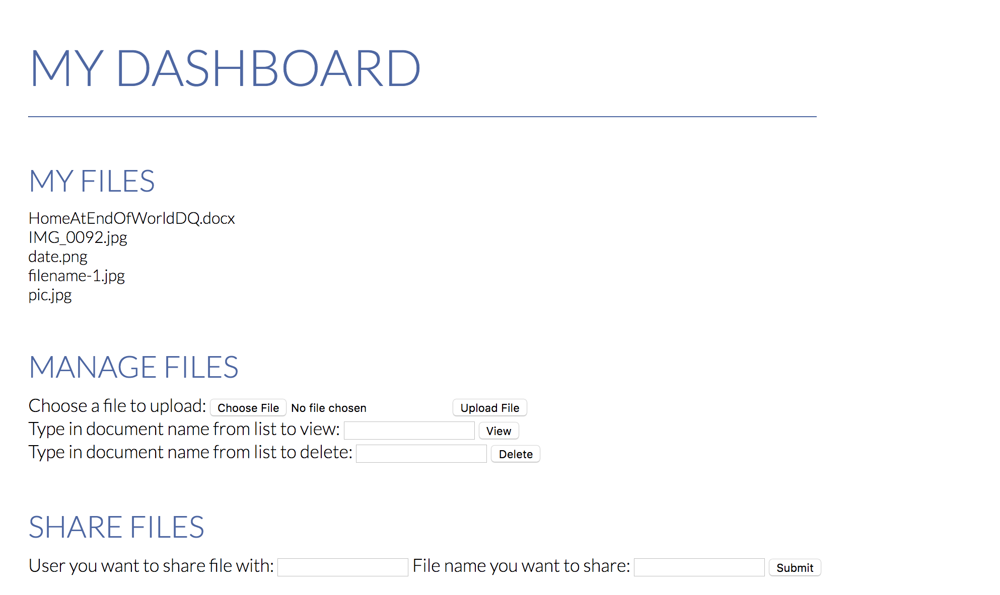

Project archive / Web development
PHP file sharing.

Overview
I worked on this project with a classmate in Rapid Prototype Development and Creative Programming. It offered simple file-sharing functionality, similar to Dropbox.
Users could register, enter a username to access a dashboard, view their files, and share files with other registered users. The prototype was not password-protected.
We built the site primarily with PHP and hosted it on an AWS EC2 instance. This is an archived student prototype, not a currently maintained file-sharing service.